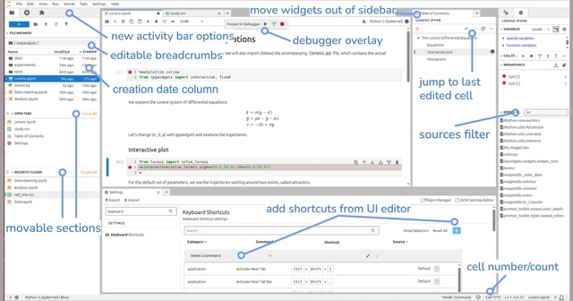
release
and the tooling behind it
Before we start, we import some preliminary libraries. We will also import (below) the accompanying lorenz.py file, which contains the actual solver and plotting routine.
We explore the Lorenz system of differential equations:
Let’s change (σ, β, ρ) with ipywidgets and examine the trajectories.
The averages of x, y and z settle near the two attractors.
Try code on the same kernel without adding cells to the notebook.
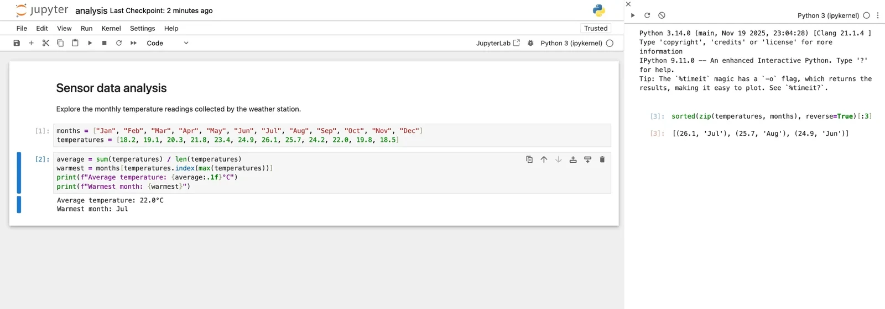
Also in 7.6: “Close and Shut Down” asks before it stops the kernel.
Add them in the shortcut editor. No JSON needed.
Ctrl H, and Ctrl Y to redo on Windows and Linux.
“Install more languages…” opens the Extension Manager.
Inline completions are coloured like code, at every cursor.
Ctrl + mouse wheel. Other panels do not change.
Left, right, up or down.
The terminal no longer keeps the keyboard focus. Focus is easier to see.
From any folder in the file browser.
JupyterLab asks before it deletes a cell. Keys 1 to 6 no longer turn code into markdown.
JupyterLab, Notebook and extensions moved from webpack to Rspack.
The build tooling now lives in jupyter-builder.
@jupyter/eslint-plugin is on by default for new extensions.
Extension migration guide: 4.5 to 4.6
four community proposals, in the Foundation’s first funding round
the four proposals, working together
reviewed, triaged, tested and adopted the work, and reported problems
OpenTeams paid for my trip to this summit
Progress reports: jupyter-governance.github.io/funding-proposals
Four proposals funded by the Jupyter Foundation.
of JupyterLab 4.6 pull requests that answered the AI question say AI generated some of the content
87 of 168 · the PR template asks since February 2026
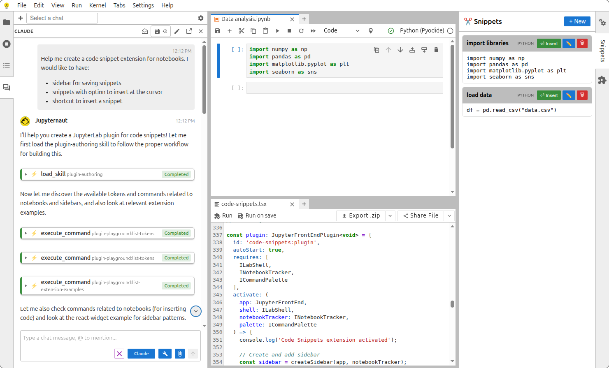
Built on jupyterlite/ai, so it works in JupyterLite and on Binder too.
The AI follows written instructions, so first drafts have the structure that the playground expects.
The AI runs JupyterLab commands: create, load, export, share.
jupyterlite/ai. Next: code completion and error checking (LSP) in JupyterLite.
plugin-activation-argsno-untranslated-stringrequire-signal-cleanupgalata-prefer-notebook-cell-helperprefer-lazy-importsno-schema-enumSometimes followed, and no error when it is not
ui-tests/tests/run-cell.spec.ts 12:3 error Use page.notebook.setCell() / runCell() instead of raw cell selectors jupyter/galata-prefer-notebook-cell-helper
Runs every time. Names the file, the line and the fix.
The agent does not need to know the rule. The linter tells it.
Wrote the same review comment three times? That comment is your rule.
## Before you finish - Run `jlpm eslint` and fix every `jupyter/*` error.
Packagers: jupyterlab_pygments needs JupyterLab to build, and JupyterLab includes it.
- jupyter labextension build . + jupyter-builder build . # --core-version 4.4.x
The new bundler switched to Module Federation v2 by accident.
Extensions that use older shared packages break. The jupyter-chat maintainers report it.
A jupyter-builder minor release goes back to Module Federation v1.
No JupyterLab release needed. Extensions upgrade when they are ready.
The build system now has its own releases.
Fixing flaky tests found 19 real bugs in JupyterLab. All are fixed.
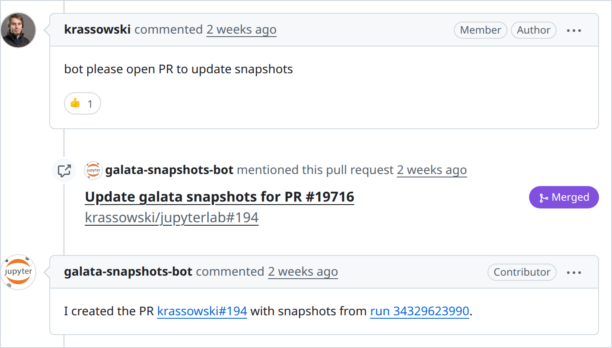
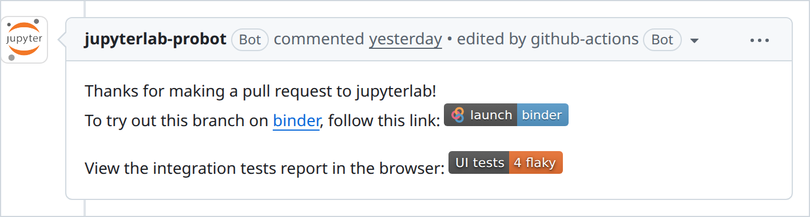
pip install jupyterlab-plugin-playgroundOr open it in JupyterLite, no install.
npm i -D @jupyter/eslint-pluginThen add configs.recommended. Run it once on your extension.
pip install jupyter-builderjupyter-builder build . instead of jupyter labextension build .
jupyterlab/maintainer-toolsTurns a Playwright report into one HTML file that GitHub can show.
jupyterlab/maintainer-toolsPosts the badge comment, with safety checks for forks.
--disable-lcd-textPin fonts with @fontsource. Set fullyParallel: true so shards get equal work.
Questions?
Erika Oliphant (OpenTeams), Ashley Baal (Quansight)
Jeremy Tuloup, Nicolas Brichet, Nicholas Bollweg, Jason Grout, Yann Pellegrini, Florence Haudin, Matt Fisher, Frédéric Collonval
95 contributors to JupyterLab 4.6, the weekly triage group, and everyone who tried the pre-releases

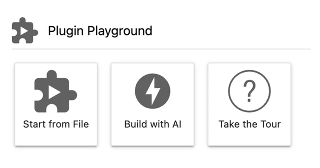
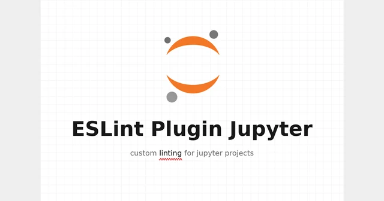
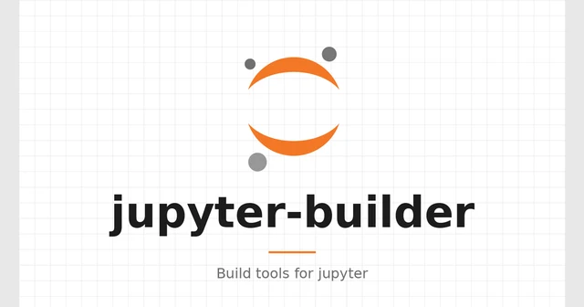
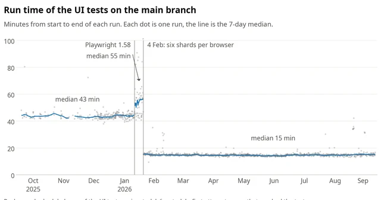
| Month opened (2026) | Said yes | Answered | Share |
|---|---|---|---|
| February (from the 13th) | 10 | 26 | 38% |
| March | 19 | 42 | 45% |
| April | 21 | 36 | 58% |
| May | 29 | 52 | 56% |
| June | 33 | 46 | 72% |
| July | 33 | 38 | 87% |
| August | 18 | 21 | 86% |
| September | 11 | 13 | 85% |
| Release | Said yes | Answered | Share |
|---|---|---|---|
| 4.6.0 | 87 | 168 | 52% |
| After 4.6.0 | 87 | 106 | 82% |
The question “Some or all of the content of this PR was generated by AI” is in the PR template since 13 February 2026. PRs by bots, and PRs that did not answer, are not counted. Script: tools/ai_usage.py.
plugin-activation-argsplugin-descriptionplugin-id-conventiontoken-formatcommand-described-byno-schema-enumno-untranslated-stringno-translation-concatenationno-dynamic-translationincorrect-translator-usagerequire-signal-cleanuprequire-signal-this-argprefer-signal-this-argrequire-disposable-ownershiprequire-disposable-transfergalata-prefer-notebook-cell-helpergalata-prefer-filebrowser-helpergalata-prefer-menu-helpergalata-prefer-context-menu-helpergalata-prefer-sidebar-activity-helperrequire-soft-assertions-before-snapshotsprefer-lazy-importsno-pageconfig-base-url| Before | Now | |
|---|---|---|
| Fedora 44, default fonts: screenshots that match CI | 1% | 85% |
| Fedora 44, default fonts: tests that pass | 56% | 93% |
| Ubuntu 26.04 runner: screenshots that match CI | 35% | 100% |
| Ubuntu 26.04 runner: tests that pass | 71% | 99.8% |
Measured on GitHub Actions on 26 September 2026. With the CI font packages installed, Fedora 44 and openSUSE Tumbleweed match all 255 comparisons. The remaining Fedora differences are Mermaid diagrams, which draw text with system fonts.